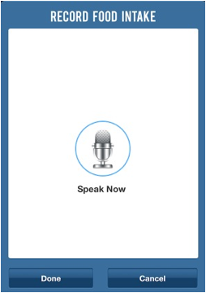

User will be able to record their voice. To select this feature, click on the microphone icon from the Consumption page:
The "RECORD FOOD INTAKE" box will appear:

Say what food items you would like to have. When you've finished clicking the “Done” button will save the recording. The application will save the recorded speech.